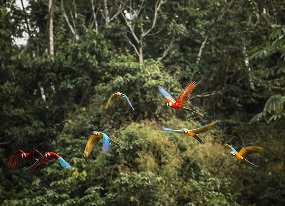
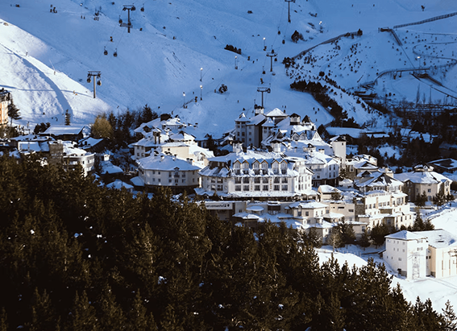
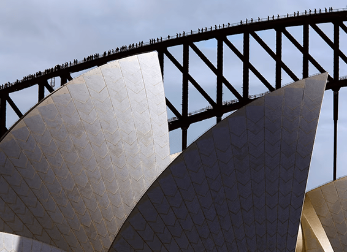

NATIONAL GEOGRAPHIC
Everything to Know About London
TRAVEL
London is a city of contrasts, where tastemakers, creatives, tech-preneurs, heroes, and hacks rub shoulders. Described as “an extraordinary city of extraordinary people” by British Prime Minister Theresa May, in London, icons of history, culture, and modernity sit side-by-side jostling for space. Like rock star Jimi Hendrix and “Messiah” composer George Frideric Handel, who were neighbors at 25 Brook Street, W1, now a museum, albeit 300 years apart.
When to Go
Fall plays host to outdoor ice rinks, winter food markets, and classical concerts. With a moderate climate, the capital is a year-round destination. But if that bucket list features hot spots of quintessentially British heritage, you may want to avoid early spring. Easter’s public holidays generate mile-long queues for sightings of the world’s largest cut diamond embedded in the Crown Jewels. For open-air cinemas, carnivals, concerts, festivals, park picnics, and sporting events, July to early September is invitingly warm. Pack a brolly (umbrella).
Celebrate
Abuzz with the suffragettes’ centenary celebrations, the Museum of London showcases its archives for a year of commemorative exhibitions and events between April and August. For a cocktail of Caribbean culture, food, street style, and music, don’t miss the Notting Hill Carnival, which has partied through the streets of West London every August for over 50 years. Meanwhile, London’s annual social calendar features special events every April at Shakespeare’s Globe to celebrate the birthday of the world’s most famous playwright.
What to Eat
Korean Bao buns have reached peak Instagram likes. With Ottolenghi’s influence, Middle Eastern baked egg and tomato Shakshuka has, too. Brits also adore beige food, from scones to fish and chips. After a middle-class makeover, sustainably caught fish is now accompanied with truffle mayonnaise and minty mushed peas. Seek out a real “chippy” for a more authentic taste. Take High Tea of scones (er, jam then cream), finger sarnies, and cream cakes in a traditional hotel or tea shop.
Souvenir to Take Home
Black cab key rings are over. Instead, remember day trips to theater land, royal parks, and palaces with a monochrome landmarks print found in boutique gift shops such as We Built This City, Carnaby. From Shoreditch’s indie MagCultures, pick up alt travel journal Cereal and its hip London Guide featuring personal essays on the city, or take home a copy of Time Out, the free guide to what’s on, as a reminder of a time and a place.
Sustainable Travel Tip
The West End is now a Wild West with unregulated tuk-tuks, taxis, and pedicabs splashing puddles over pedestrians. But, boy, they’re fun (and low-emission). Just agree to the price first or prepare to empty your wallet. For a moderate adrenaline rush, take the cable car aerial tour from the Greenwich Peninsula to the Royal Docks. Critics advise avoiding it on gusty days. Pay by Oyster Card for discounts.
Comments :
- john Very good
- john Very good
Leave a Reply
Your email address will not be published. Required fields are marked*
Related posts:
-
6 of the best Sir David Attenborough series to watch after Planet Earth III
Attenborough’s latest series, Planet Earth III, once again zooms in on the ever changing habitats of our world. The programme documented more than 43 countries over the course of nearly five years
View article -
Sunshine and snow in Europe's southern most ski resort
The aroma of a tapas bar is an incongruous sensation when dressed in ski kit, but it’s the end of a long day on the slopes, and plates of grilled squid, spicy patatas bravas and plump green olives are on offer, along with a bargain glass of Rioja
View article -
How a commuter bridge turned into a bucket list experience
I now see why climbing the Sydney Harbour Bridge ranks as one of Australia’s most popular experiences, attracting more than four million climbers (including, recently, Michelle and Barack Obama) since the first customer stepped onto its steel beams 25 years ago this week on October 1, 1998.
View article